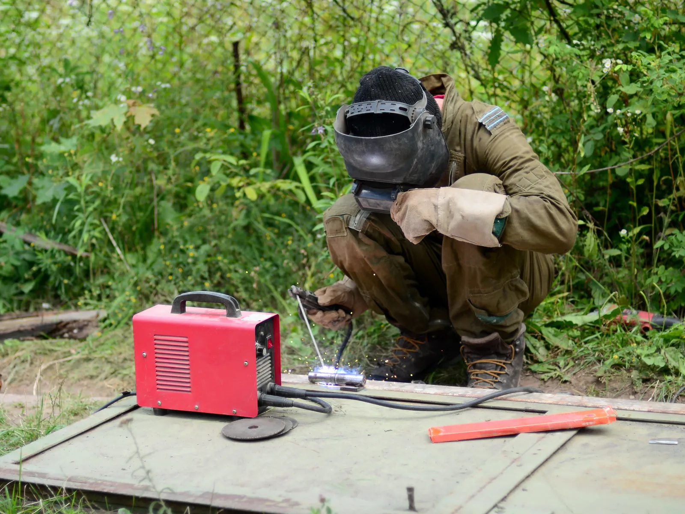

Home · Service Areas · Slidell
Slidell, LA Mobile Welders
At Big Easy Mobile Welders, we handle on-site welding for Slidell homes and businesses, from gates and railings to custom aluminum, steel and stainless work. A licensed, insured welder pulls up with a fully equipped mobile unit and finishes the job at your property.

We come to the jobWhat Do You Get With a Mobile Welding Visit in Slidell?
A mobile welding visit in Slidell includes a free, no-obligation estimate, a licensed and insured welder, a fully equipped mobile unit parked at your property, careful prep of the metal with brushes and grinders, and a final review of the work with you before we pack up.
Free, No-Pressure Pricing
You get a free estimate with transparent pricing, no hidden fees and no obligation to book.
Over 20 Years of Experience
Our licensed, insured and highly trained welders bring more than two decades of hands-on experience.
Tools Brought to the Site
Welding machines, grinders and hand tools ride along in our mobile unit, so nothing gets hauled away.
Prep That Protects the Weld
We grind and brush off corrosion, coatings and mill scale so the new weld fuses into sound metal.
Aluminum, Steel and Stainless
We work with aluminum, mild steel and stainless steel, on small repairs and larger fabrication alike.
A Final Look Together
We inspect the finished weld with you, keep payment simple and stand behind the job with a satisfaction guarantee.

What Brings Slidell Customers to a Mobile Welder?
Slidell customers usually reach out to a mobile welder when outdoor metal fails under weather, wear or heavy use. Common calls are gates that sag or will not latch, rusted railings, storm-bent fence sections, cracked boat trailer frames and broken aluminum fixtures, plus brackets and repairs for local businesses.
- Gate Sagging Off Its Post
- Latch Out of Line
- Rust Eating a Railing Foot
- Wind-Bent Fence Panels
- Cracked Boat Trailer Frame
- Broken Aluminum Rail
- Loose Dock Hardware
- Corroded Steel Stairs
- Custom Bracket or Mount
What Welding Services Do Our Mobile Crews Offer in Slidell?
You can book fence, gate, iron railing, custom, arc and pipe welding in Slidell, as well as window frame repair, specialized jobs and metal fabrication. All of it is done at your property by our mobile welding team, and each job begins with a free estimate.

Pipe Welding
Pipe and pipeline repair on site, with stick and gas-shielded processes matched to the pipe.
View pipe welding →
Fence Welding
Fence repairs and custom fence fabrication, with the material and process chosen for your fence.
View fence welding →
Gate Welding
Gate repairs and custom gates in steel or aluminum, with materials and tools covered in your estimate.
View gate welding →
Iron Railing Welding
Custom indoor and outdoor railings for stairways, decks and balconies, built to fit your property.
View railing welding →
Arc Welding
Shielded and non-shielded arc welding for commercial and residential customers.
View arc welding →
Custom Welding
Custom ironwork, estimated before we start so we arrive with the right equipment for the job.
View custom welding →
What Are the Signs You Need a Welder in Slidell?
The clearest signs you need a welder in Slidell are metal that moves when it should not, cracks along a joint and rust that keeps returning after paint. Catching these early often keeps a repair small, before the damage spreads into posts, hinges and the surrounding frame.
Play in a Railing or Gate
Any rattle or give in a railing, or a gate that swings low, often means a joint or post has failed.
Splits Near Old Welds
A crack beside an old weld tends to grow with every load. Repairing it early may save the rest of the section.
Rust Coming Back Through Paint
Orange stains bleeding through fresh paint mean corrosion is working under the surface.
Why Does Welding Work in Slidell Need a Different Approach?
Welding work in Slidell differs because the city sits north of Lake Pontchartrain among rivers and bayous, where boats, docks and outdoor metal live in damp air. Most homes are detached and many date from the 1970s, so aging gates, railings and fences make up a large share of local repair jobs.

Slidell's history, housing and waterfront all show up in the metalwork people ask us about.
- Detached Homes Dominate.Single-family detached houses account for 72.4 percent of Slidell's housing stock, per the Census Bureau's 2020 to 2024 American Community Survey.
- A 1970s Building Boom.About a third of Slidell homes, 33.2 percent, were built from 1970 through 1979, and more than half predate 1980.
- Rebuilt After Katrina.The city notes that Hurricane Katrina devastated Slidell on August 29, 2005, leaving many parts of the city with significant damage.
- Life on the Water.The city runs a marina with boat slips at Heritage Park, and our guide to marine and dockside welding covers the metal that waterfront life wears out.

Why Hire a Local Mobile Welding Team in Slidell?
Hiring a local mobile welding company in Slidell means the repair happens where the metal is, with no trailer rental or trip to a shop. You also get a locally owned team with many years of service around New Orleans, free estimates, clear pricing and someone to call if a question comes up later.
Locally Owned Business
We are owned locally and have worked around New Orleans and its neighboring cities for many years.
A Shop on Wheels
Our fully equipped mobile units carry what we need to weld at your property.
Qualified Welders
Licensed, insured and highly trained welders take on residential and commercial jobs alike.
Straightforward Costs
Every estimate is free and carries no obligation, and our pricing has no hidden fees.
How Does a Mobile Welding Appointment Usually Work in Slidell?
A mobile welding appointment in Slidell works in four steps. You contact us for a free estimate, accept the quote and choose a weekday time, our welder preps and welds on site, and we review the finished job with you and remain available for follow-up support.
Reach Out
Phone (504) 370-2757 or fill in the online form with a quick note about the metal and the problem.
Set the Day
When you accept the quote, choose a visit window from 8 AM to 3 PM, Monday to Friday.
On-Site Repair
Our welder preps the joint and completes the weld or fabrication at your property.
Check the Result
We look over the finished work with you and remain on call for follow-up questions.
 The rig comes to you
The rig comes to youHow Should You Plan a Mobile Welding Job in Slidell?
Before booking a welder in Slidell, think about what the piece is made of, where it sits and what outcome you want. Aluminum boat parts, steel gates and stainless fixtures each weld differently, and knowing whether you need a repair, reinforcement or new build helps us quote accurately and bring the right equipment.
Material and Condition
Tell us if the piece is aluminum, steel, stainless or cast iron, and send a photo of the damage if you can.
Getting the Unit Close
Our mobile unit needs a nearby spot to park. Our checklist on preparing for a mobile welder's visit covers gates, pets and parking.
Fix, Reinforce or Build
Repairs, reinforcements and custom builds are scoped and priced differently, so say which you have in mind.
Do Our Mobile Welders Cover Other Towns Around Slidell?
Our mobile welders work in Slidell and travel to Mandeville, Covington and Madisonville on the north shore, to Hammond and Baton Rouge farther west, and to New Orleans, Metairie, Kenner, Gretna, LaPlace and St. Rose south of the lake. Every city gets the same experienced welders and free estimates.
- New Orleans
- Metairie
- Kenner
- Gretna
- St. Rose
- LaPlace
- Slidell
- Mandeville
- Covington
- Madisonville
- Hammond
- Baton Rouge
Not sure we cover your street?
Request a free estimate or call us, and we will confirm before we book the job.
Where Our Rigs Roll
Schematic, not to scale. New Orleans and the 11 nearby cities we serve.
About Slidell
Slidell is the largest city in St. Tammany Parish, at its southeastern tip about three miles from Lake Pontchartrain.
Founded With the Railroad
Slidell's foundations were laid in 1882, when New Orleans and Northeastern Railroad surveyors mapped a new route east from New Orleans. It officially became a town on November 13, 1888.
Population and Land
Slidell grew from 27,068 residents in 2010 to 28,781 in the 2020 Census, on about 15 square miles of land.
Plenty of Green Space
The city's parks and recreation department maintains 30 city parks.
Things To Do
A day out in Slidell might start in the old downtown and end on a boat in the swamp.
Olde Towne Slidell
The parish tourism office points to Olde Towne's shops and its murals by local artists, and the city protects the area as a preservation district.
Slidell Museum
The city-run museum fills the first floor of the 1907 brick town hall at 2020 First Street, with the Slidell Mardi Gras Museum upstairs.
Honey Island Swamp
The parish tourism office lists boat tours of the Honey Island Swamp, most running around two hours.
Nearby Suburbs
Slidell anchors the eastern side of our service area, with neighbors to the west and across the lake.
Mandeville
Mandeville, to the west, is a city of 13,192 residents as of the 2020 Census.
Covington
Farther west and inland, Covington counted 11,564 residents in the 2020 Census.
New Orleans
New Orleans lies across Lake Pontchartrain to the southwest and counted 383,997 residents in the 2020 Census.
Interesting and Fun Facts
A few facts about Slidell, from the source of its name to its part in the race to the moon.
Named for John Slidell
Baron Erlanger named the town for his late father-in-law, John Slidell, a prominent state, national and Confederate political figure.
Bricks, Creosote and Ships
After its founding, Slidell had one of the world's largest creosote plants, one of the country's largest brickworks, several large lumber mills and a shipyard.
A NASA Boom
In the 1960s, Slidell became the middle of three local sites in NASA's lunar landing program, and more than 15,000 NASA employees and their families moved to the area.
Public Transportation
Public transit in Slidell comes from STAR Transit, St. Tammany Parish's demand response service, which picks riders up curb to curb by reservation.
- STAR Transit: curb-to-curb rides within St. Tammany Parish, booked first come, first served.
- Urban service hours: 7:00 AM to 5:00 PM, Monday to Friday.
- Rural service hours: 7:00 AM to 4:00 PM, Monday to Friday.
- Open to all residents: half fare for riders 60 and older, people with disabilities, Medicare cardholders and children 6 to 12.
- Reservations: call STAR Transit at 985-327-0185.
How Do Slidell Property Owners Get a Free Welding Estimate?
To request a free welding estimate in Slidell, call (504) 370-2757 or send the online form. Include what needs welding, whether it is steel, aluminum or stainless, and where it is on the property, and we follow up with a transparent quote that comes with no obligation.
Loading the estimate form...
If it does not appear, call us at (504) 370-2757.

What Do Slidell Property Owners Ask About Welding?
Slidell property owners often ask about repairing aluminum pool fences, rusted steel under raised houses, cracked fence posts, porch columns and awning frames, which paint suits a welded gate, whether stainless railings can be repaired and whether Slidell is on Lake Pontchartrain.
Can a welder repair an aluminum pool fence?
Aluminum pool fences can often be repaired by welding broken pickets, rails or post joints with a process suited to aluminum. The powder coat burns off near the weld, so the repaired area needs touch-up paint. A pool fence gate should still close and latch properly after any repair.
Can a welder repair rusted steel under a raised house?
A welder can often repair rusted steel beams, brackets and connections under a raised house by cutting out weak metal and welding in new plate or sections. Structural work may need an engineer's plan and a permit first. Every repaired area should be primed and coated to slow future rust.
What paint should go on a welded steel gate?
A welded steel gate usually holds up best with a rust-inhibiting metal primer under an exterior enamel or another paint made for metal. The surface should be clean, dry and free of loose rust first. Galvanized gates need a primer rated for galvanized surfaces so the paint bonds.
Can a welder fix a cracked metal fence post?
A cracked metal fence post can often be welded, or the damaged length can be cut off and a new section welded on. Posts that have rusted through at ground level usually need a new base or a full replacement. The rails attached to the post should be checked at the same time.
Can a welder repair a rusted metal porch column?
Rusted metal porch columns can often be repaired by cutting out the corroded base and welding in a new section or base plate. A column carrying roof load is supported during the work, and sealing the spot where water collects helps afterward.
Can a welder repair a metal awning frame?
A welder can often repair a steel or aluminum awning frame where a joint has cracked, a bracket has pulled loose or a member has bent. Fabric or panels may come off first to keep them clear of sparks, and wall mounts get checked for rust.
Can stainless steel railings be repaired?
Stainless steel railings can usually be repaired by rewelding cracked joints or replacing damaged posts and rails, often with TIG for a clean finish. The weld area is then cleaned, and often passivated or polished, so it keeps its rust resistance. Matching the original grade and finish keeps the repair from standing out.
Is Slidell on Lake Pontchartrain?
Slidell lies near the lake rather than on it: the city places it about three miles from the north shore of Lake Pontchartrain, across the water from New Orleans. The 2020 Census counted 28,781 residents. The city's history notes that the railroad bridge built at its founding was the first to cross the lake.


Book Your Free Mobile Welding Estimate
Tell us what needs welding, and we will bring the rig to your door anywhere in the New Orleans area.